The following section will describe each of the query option from the Other Queries section of the query drop down menu as shown in the figure below.
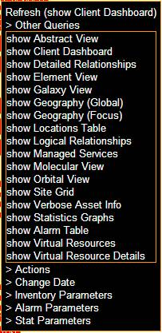
Figure 9-1 Customer Level Drop Down Menu > Other Queries
While your cursor is hovered over a customer on the customer dashboard page, left click your mouse. This will display the pop-up menu as shown in the figure above. For example purposes the customer ATT Monitoring has been selected.
Clicking on the Drill In (show Abstract View) will expand the customer node. An example of a client abstract view is shown in the below figure. This view displays all of the clients/devices associated with this customer along with the location(s), site ids and any associated alarms at that time.
The Drill In (show Abstract View) can also be selected from the Other Queries selection from the drop down menu.
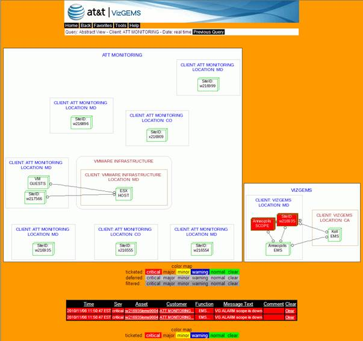
Figure 9-2 Client Abstract View
From the above screen you can drill down further by left clicking on any of the clients and selecting an option from the drop down menu.
To display the client dashboard, hover the mouse over any of the clients on the screen as shown below and left click the mouse. In this example Client: ATT Monitoring has been selected.
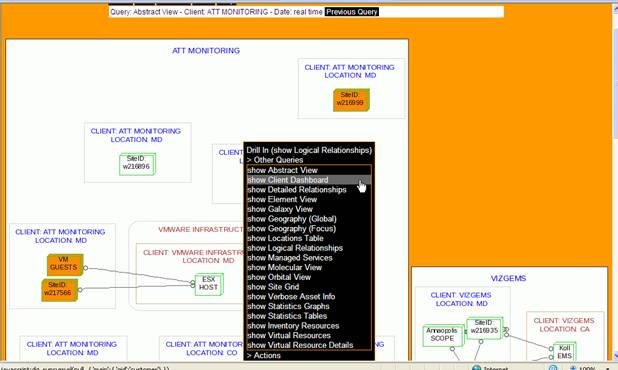
Figure 9-3 show Client Dashboard
The screen below displays the results of the show client dashboard selection.
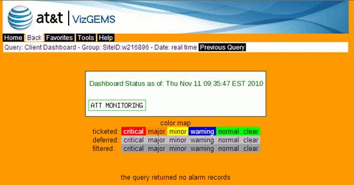
To drill in further into a customer (example ATT Monitoring) from the client dashboard, hover your mouse over the client name (ATT Monitoring), the SITE: name, or one of the devices on the screen above and left click. Select show Detailed Relationships from the drop down menu.
NOTE:
If you do not select a specific customer/client/device name, all of the detailed relationships for that customer will be displayed.
The following screen displays all of the detailed relationships for the specific client including the client name, site location, function, assets and any associated alarm data.
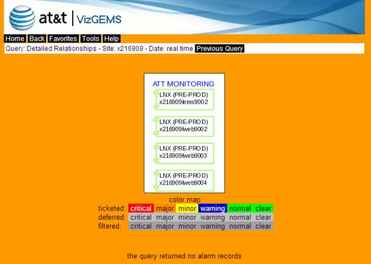
Figure 9-4 Detailed Relationships - Client Example
From the Client Dashboard site, hover your mouse over a client (example ATT Monitoring) and left click. The drop down selection menu will display as shown in the figure below. You may also select the client from the Client List on the main landing page.
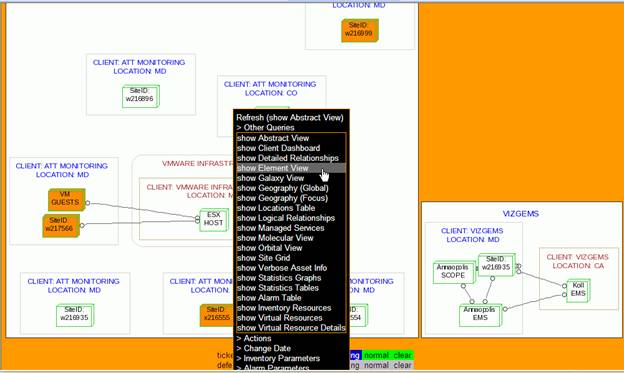
Figure 9-5 show Element View Drop Down Menu
From the drop down selection menu left click on Other Queries and select show Element View. The following screen will display.
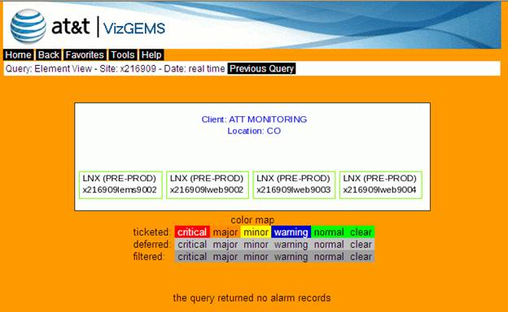
Figure 9-6 show Element View
The above screen shows all of the individual assets elements for that particular client (ATT Monitoring) and any alarm data at the time of the query. If there are multiple client locations, those will display as well. From here you can left click on any group or asset and query the element level for that group/asset as well. This will display the individual elements for that asset.
From the client dashboard screen as shown in the following figure, left click anywhere in the dashboard container. From the drop down menu under Other Queries click on show Galaxy View.
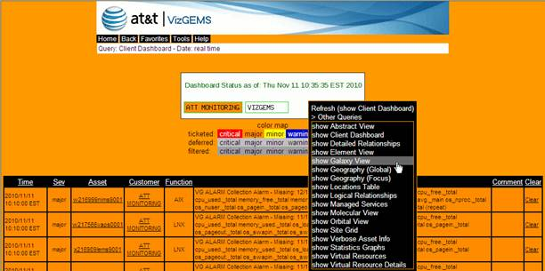
Figure 9-7 show Galaxy View Drop Down Menu
After selecting show Galaxy View the following figure is displayed. All assets are displayed along with their respective connections and any associated alarm data at that time.
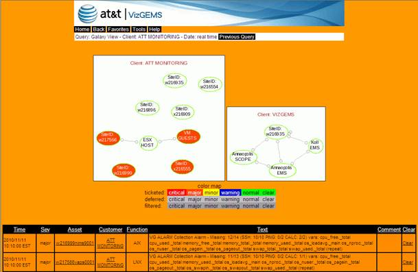
Figure 9-8 show Galaxy View
From the client dashboard screen as shown in the following figure, left click anywhere in the dashboard container. From the drop down menu under Other Queries click on show Geography (Global).
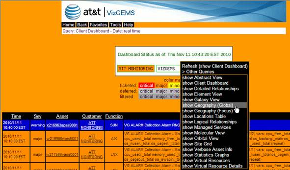
Figure 9-9 show Geography (Global) Drop Down Menu
The following figure shows the geography by city/state for the selected customer/client.
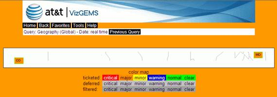
Figure 9-10 show Geography (Global)
From the client dashboard screen as shown in the following figure, left click anywhere in the dashboard container. From the drop down menu under Other Queries click on show Geography (Focus).
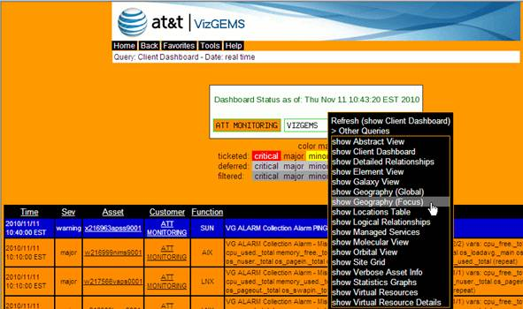
Figure 9-11 show Geography (Focus) Drop Down Menu
The following figure shows the geography by group/zone for the selected customer/client.
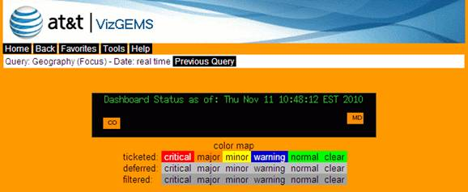
Figure 9-12 show Geography (Focus)
Hovering over any client/asset/device and left clicking your mouse will bring up the Drill In drop down menu. Select show Locations Table from the drop down menu as show in the figure below.
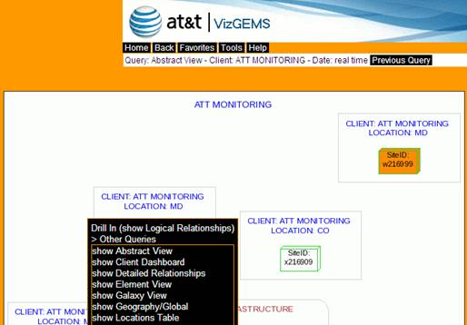
Figure 9-13 show Locations Table Drop Down Menu
The figure below displays the location grid for the Site Id that was selected on the previous screen along with all applicable alarm data at that time.
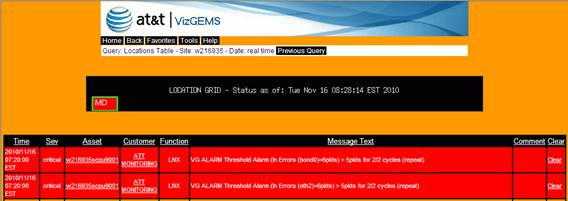
Figure 9-14 show Locations Table
Hovering over any client/asset/device and left clicking your mouse will bring up the Drill In drop down menu. Select show Logical Relationships from the drop down menu as show in the figure below.
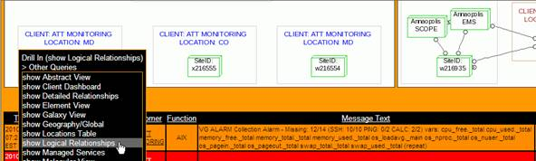
Figure 9-15 show Logical Relationships Drop Down Menu
The figure below displays all of the logical relationships for the Client you selected on the previous screen along with all applicable alarm data at that time.
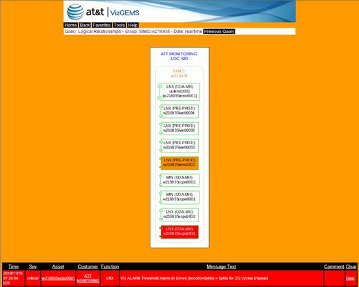
Figure 9-16 show Logical Relationships
From the Client Dashboard site, hover your mouse over a client (in this example, ATT Monitoring) and left click. You may also select the client from the Client List on the main landing page. The Drill In drop down menu will display. Left click on Other Queries and select show Managed Services as shown in the figure below.
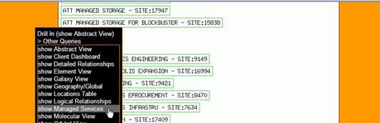
Figure 9-17 show Managed Services Drop Down Menu
All Managed Services for client ATT Monitoring will display as in the figure below.
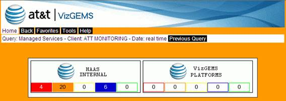
Figure 9-18 show Managed Services
The above screen displays all businesses or managed services associated with the client that was selected. Any alarm data at the time of the query is displayed with the corresponding alarm color and the number of alarms. If no alarms are present, each box will be clear and the number 0 (zero alarms) will be displayed.
Hovering over any client/asset/device and left clicking your mouse will bring up the Drill In drop down menu. Select show Molecular View from the drop down menu as show in the figure below.
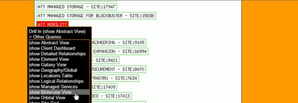
Figure 9- 19 show Molecular View Drop Down Menu
The following screen displays all of the customers/assets in a molecular view format and all of the associated alarm data at that time.
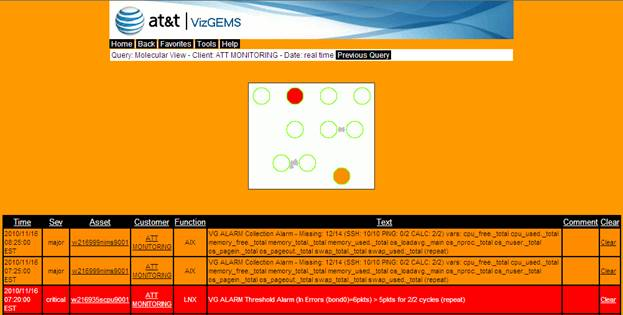
Figure 9-20 show Molecular View
Hovering over any client/asset/device and left clicking your mouse will bring up the Drill In drop down menu. Select show Orbital View from the drop down menu as show in the figure below.
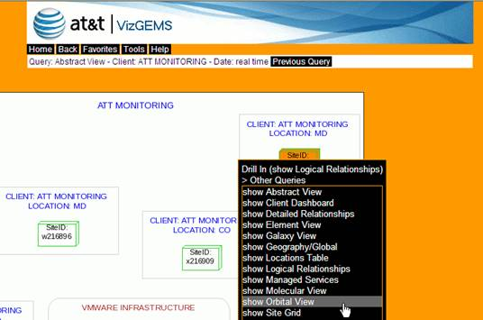
Figure 9-21 show Orbital View Drop Down Menu
The following screen displays all of the customers/assets in a orbital view format and all of the associated alarm data at that time.
Figure 9-22 show Orbital View
From the Client Dashboard site, hover your mouse over a client (in this example, ATT Connect) and left click. You may also select the client from the Client List on the main landing page. The Drill In drop down menu will display. Left click on Other Queries and select show Site Grid as shown in the figure below.
Figure 9-23 show Site Grid Drop Down Menu
The following screen displays all of the sites for client ATT Connect and their connections and any applicable alarm data at that time.
Figure 9-24 show Site Grid
From the client level you can perform this query by hovering your mouse over the client name, site location or the group name(s) to reveal the drop down menu as show below.
Figure 9-25 show Verbose Asset Info Drop Down Menu
Click on the show Verbose Asset Info link. The following screen will display.
This example shows all the detailed (verbose) information at the client/site level including the assets, alarm data, statistical data and factsheet data.
Figure 9-26 show Verbose Asset Info – Client Example
The show Verbose Asset Info. can be refreshed at any time by again hovering your mouse over an item and left clicking. The following screen will display where you may select to refresh from the drop down menu.
Figure 9-27 show Verbose Asset Info. - Refresh Option
From the Client Dashboard site, hover your mouse over a client (in this example, ATT Monitoring) and left click. You may also select the client from the Client List on the main landing page. The Drill In drop down menu will display. Left click on Other Queries and select show Statistics Graphs as shown in the figure below.
Figure 9-28 show Statistics Graphs Drop Down Menu
The following figure is just a fragment of what you may see. All statistics for the client (or asset/device) will display.
Figure 9-29 show Statistics Graphs
The above screen displays all associated statistics for the client selected in graphical format. You can enlarge a specific graph by hovering over the asset name and left clicking the mouse. From the drop down menu select Enlarge Graph. Once the graph is enlarged you can select Shrink Graph from the drop down menu to go back to the original view.
You can hover any graph asset name (in the example below, usilems0001 Ping Packet Loss) select Drill In (show Statistics Tables) to display that specific asset in table format. The table is displayed in 5 minute increments over a 24 hour period.
You can also hover over a client/device/asset and click on the Drill In (show Statistics Tables) as well. A table for every statistic will display on the screen.
Figure 9-30 Drill In (show Statistics Table)
From any client/asset/device you can left click to bring up the Drill In drop down menu. Left click on Other Queries and select show Alarm Table as shown on the screen below.
Figure 9-31 show Alarm Table Drop Down Menu
Only sites/devices that have alarms will display. If there are no alarms associated with the device you have selected, you will receive a message stating such.
You can sort the alarm table by hovering over any of the alarm table headings and left clicking the mouse.
Figure 9-32 show Alarm Table
From any client/asset/device you can left click to bring up the Drill In drop down menu. Left click on Other Queries and select show Virtual Resources as shown on the screen below.
Figure 9-33 show Virtual Resources Drop Down Menu
The virtual resources for the asset selected will display.
From any client/asset/device you can left click to bring up the Drill In drop down menu. Left click on Other Queries and select show Virtual Resource Details as shown on the screen below.
Figure 9-34 show Virtual Resource Details Drop Down Menu
All of the information on the virtual resources for the asset selected will display.